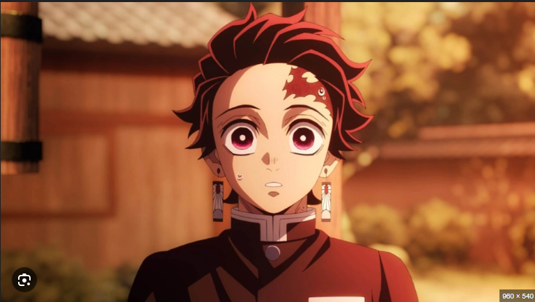

crunchy roll
demon slayer
Demon Slayer: Kimetsu no Yaiba (Japanese: 鬼滅の刃, Hepburn: Kimetsu no Yaiba; rgh. 'Blade of Demon Destruction'[4]) is a Japanese manga series written and illustrated by Koyoharu Gotouge. It was serialized in Shueisha's shōnen manga magazine Weekly Shōnen Jump from February 2016 to May 2020, with its chapters collected in 23 tankōbon volumes. It has been published in English by Viz Media and simultaneously on the Manga Plus platform by Shueisha. It follows teenage Tanjiro Kamado, who joins the Demon Slayer Corps after his family is slaughtered and the sole survivor, his younger sister Nezuko, is turned into a demon, in the hopes of turning her human again and defeating the demon king Muzan Kibutsuji.
KAMADO TANJIRO

Storyline
An anime television series adaptation, produced by Ufotable, aired a 26-episode first season from April to September 2019, with a sequel film, Demon Slayer: Kimetsu no Yaiba – The Movie: Mugen Train, released in October 2020, which became the highest-grossing anime and Japanese film of all time. An 18-episode second season of the anime series aired from October 2021 to February 2022 while a feature-length compilation, Demon Slayer: Kimetsu no Yaiba – To the Swordsmith Village, was released in theaters in February 2023. An 11-episode third season aired from April to June 2023 while another compilation, Demon Slayer: Kimetsu no Yaiba – To the Hashira Training, was released in theaters in February 2024. An eight-episode fourth season aired from May to June 2024. A film trilogy sequel adapting the "Infinity Castle" story arc premiered in theaters in July 2025.
By July 2025, the manga had over 220 million copies in circulation, including digital versions, making it one of the best-selling manga series of all time; it was the best-selling manga of 2019 and 2020. It has received critical acclaim for its art, storyline, action scenes and characters. The Demon Slayer: Kimetsu no Yaiba franchise is one of the highest-grossing media franchises of all time.
Synopsis
Setting
In Taishō era Japan, a secret organization known as the "Demon Slayer Corps" has waged a war against demons for centuries. Demons are former humans who possess supernatural abilities such as enhanced strength, rapid regeneration, and unique powers referred to as "Blood Demon Arts". Demons can only be killed if they are exposed to direct sunlight, decapitated with weapons crafted from an alloy called Nichirin, or injected with a poison extracted from wisteria flowers.
In contrast, the Demon Slayers are entirely human but employ specialized elemental breathing techniques known as "Breathing Styles". These techniques grant them superhuman strength, heightened abilities, and increased resilience that enable them to fight demons effectively. The most formidable Demon Slayers are known as the "Hashira" and gain this title through multiple advancements in the Corps' ranks, culminating in killing fifty demons at the highest level or a member of the Twelve Kizuki.
Tanjiro and Nezuko are joined in their mission by fellow Demon Slayers Zenitsu Agatsuma and Inosuke Hashibira. Together, they defeat several members of the Twelve Kizuki. During a fierce battle, Tanjiro awakens a mysterious and powerful swordsmanship technique known as "Hinokami Kagura". Their actions draw the attention of the Hashira, the Corps' highest-ranking swordsmen, and they are brought before the organization's leader, Kagaya Ubuyashiki. He sanctions their continued, believing the siblings are pivotal to defeating Muzan.